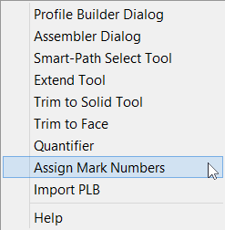
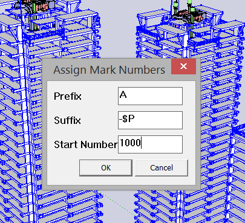
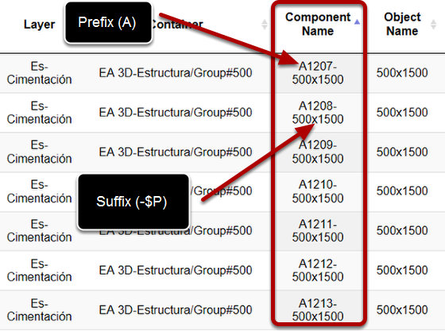

First select Profile Members within your model and then launch the tool.
Select the tool from the Profile Builder menu.

Prefix = first part of name
Suffix = last part of name
Start Number = the first number
If you input $P, the profile name will be substituted and included in the new name.

When using this tool, the Component Definition name will be renamed for each selected Profile Member.
SketchUp Groups also have an internal Component Definition that will also be renamed when using this tool.